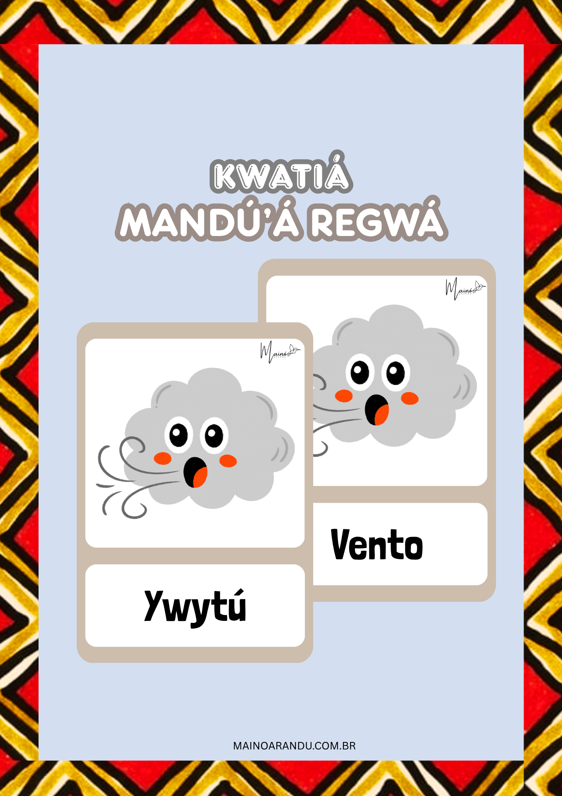
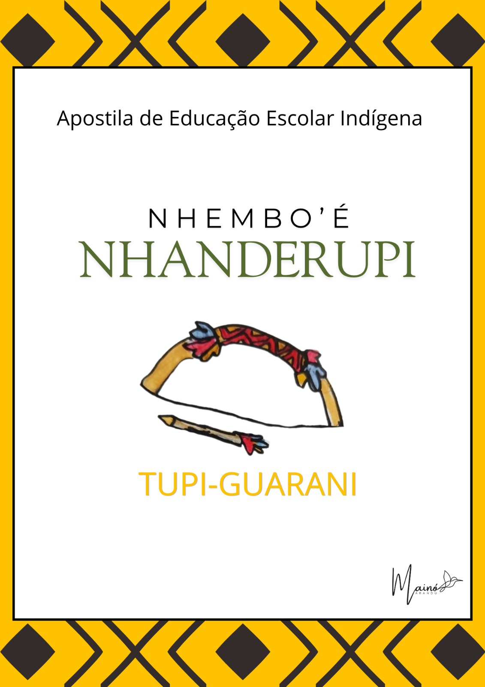

Um espaço dedicado a educadores indígenas e multiplicadores da cultura do povo Tupi-Guarani.
O Mainó Arandu é um projeto educacional voltado à criação de materiais didáticos indígenas com foco no fortalecimento do pertencimento. Os conteúdos são pensados para contribuir com práticas pedagógicas que valorizem a identidade cultural. A proposta é oferecer recursos que auxiliem educadores na construção de um ensino mais inclusivo, significativo e conectado com a realidade dos povos indígenas.
Os materiais didáticos são desenvolvidos com base na vivência da cultura indígena, com foco no desenvolvimento linguístico, cultural e social das crianças. Promovendo o contato com a língua e sua valorização. Os materiais lúdicos complementam esse processo, possibilitando práticas pedagógicas mais dinâmicas, interativas e significativas em sala de aula.

Recursos que preservam, ensinam e compartilham.
Indicado para uso educativo, auxiliando crianças e professores no contato com a língua, a cultura e o fortalecimento do pertencimento.
R$ 47,90
Digital
Conjunto de cartões educativos desenvolvido para trabalhar o conceito de tempo (clima) de forma lúdica, estimulando a memória, a atenção e o aprendizado das crianças.
R$ 4,90
Digital
Atividades voltadas à língua Tupi-Guarani, com foco na compreensão e interpretação das palavras. Possui 20 atividades enriquecedoras.
R$ 24,90
DigitalEducar é valorizar quem somos.
Sua participação ajuda a produzir novos materiais didáticos e ampliar o alcance deste projeto educativo.